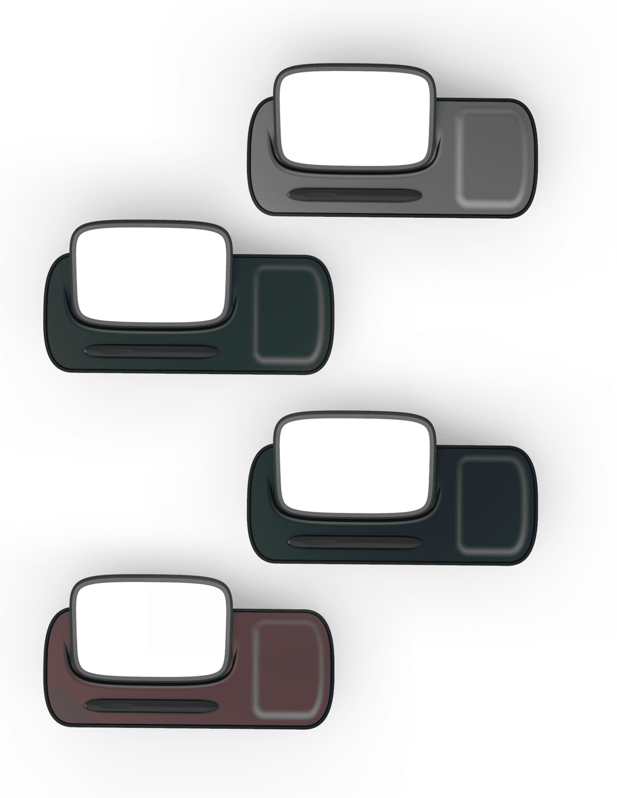

Reflectiv
Reflectiv is a conceptual smart device with a clear ethos of calming the busy mind and embracing mindfulness. Born from a design thinking exercise, Reflectiv is a luxury product that explores a new kind of smart device. A device for peace of mind. Something that sounds almost oxymoronic, could a smart device provide the right atmosphere for introspection? Devices today come jam packed with capabilities, computing power but also with many unwanted distractions and opportunities to consume content. While useful, smart phones and tablets are not about focus. Reflectiv is a thought exercise of what a practical luxury device could look like for those who need a serious dedicated tool for writing and minful reflection. No distractions.
00

Context
This project was done in school as an exercise in developing a smart consumer good that aims to incentivize behavioral change.
Problem
Phone addiction and use before bed greatly affects the natural sleep cycle in the brain causing potential insomnia and delayed sleep time.
Constraints
3 Months of broad exploration and class critique led to the rapid prototyping of the final Design and Direction.
Solution
A gentle encouragement to reduce phone use by swapping the habit with a E-ink consumer device aimed at calming the mind.
Reflectiv: A Journaling Tablet for Mental Clarity
Rediscover mental clarity with Reflectiv, an e-ink journaling tablet thoughtfully crafted to prioritize reflection. Its e-ink display delivers a glare-free alternative to the harsh glow of laptops and tablets.
Reflectiv combines the elegance of fine stationery with the practicality of modern technology. Its e-ink screen mimics the tactile beauty of paper, offering a seamless flow for journaling, brainstorming, or planning your day—all without the waste of ink and paper.
The accompanying docking station allows for easy charging of both the e–ink tablet and your cellphone. Set down your bright screens, pick up Reflectiv, and immerse yourself in mindful writing. When you’re away from Reflectiv, access your entries easily on any device via the Reflectiv app, seamlessly syncing your thoughts and plans from bedside to on the go.
Key Benefits at a Glance
Aesthetic Design: Blends seamlessly with your bedside decor.
E-Ink Screen: A calming, glare-free writing surface that mimics the feel of paper.
Mindful Experience: Replace overstimulation with clarity and focus.
Sustainable Innovation: Reduces the paper waste of traditional journaling.
Seamless Integration: Syncs your thoughts to the Reflectiv app for effortless accessibility.
Better Sleep: Set aside your phone and check your calendar or write down tomorrow's agenda free from blue light with the Reflectiv e-ink screen.
About the design
Seamlessly blending soft, elegant forms into your home décor, Reflectiv is designed to live on your desk or bedside, inviting moments of reflection in a fast-paced world.
In passive mode, its screen quietly transforms into a sophisticated clock, harmonizing with your space without distraction. But Reflectiv is more than just another device. It’s a sanctuary from overstimulation, allowing you to calmly record your thoughts distraction free.